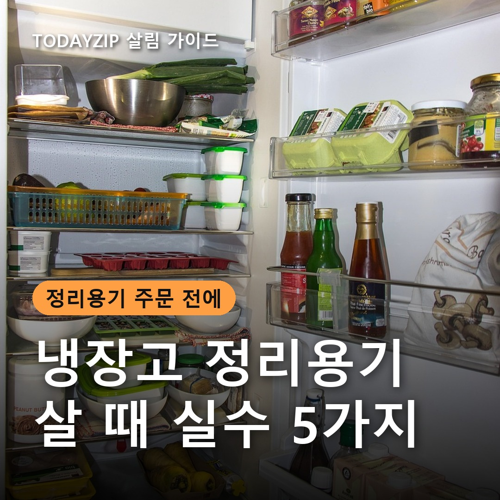
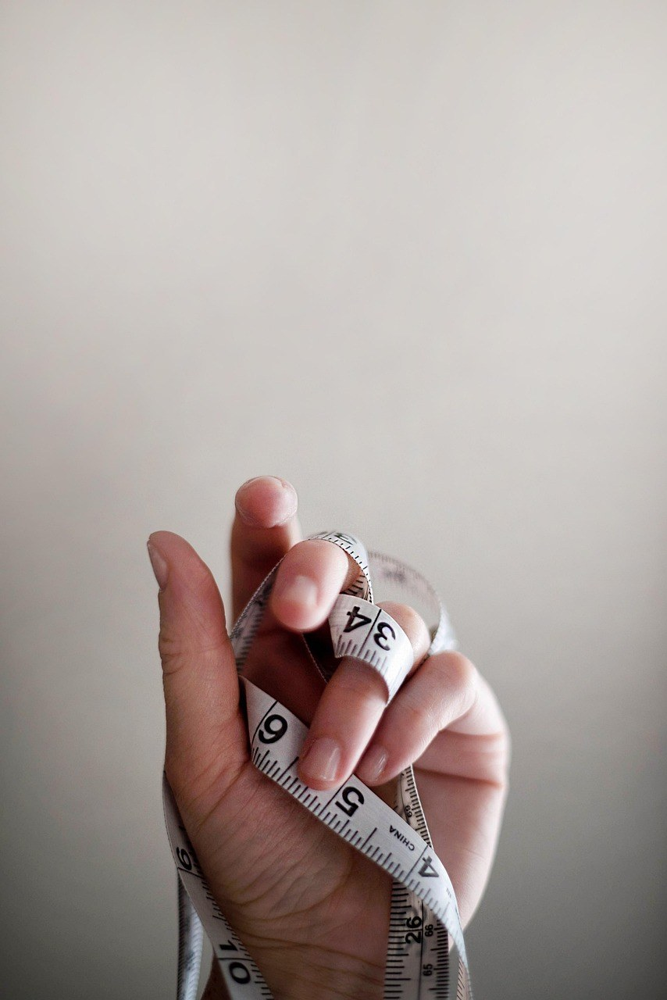
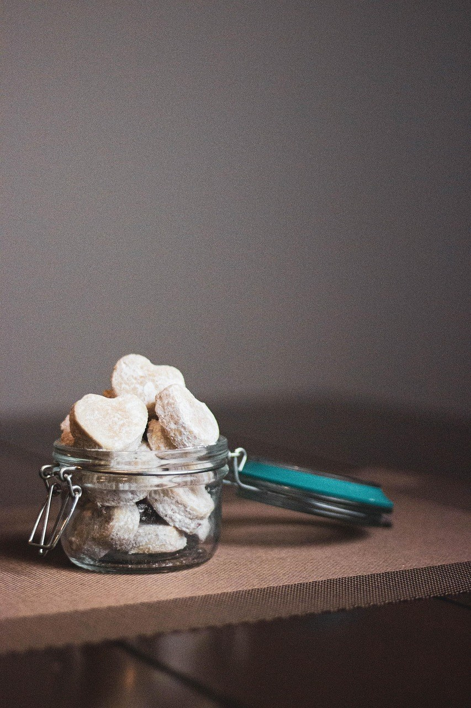
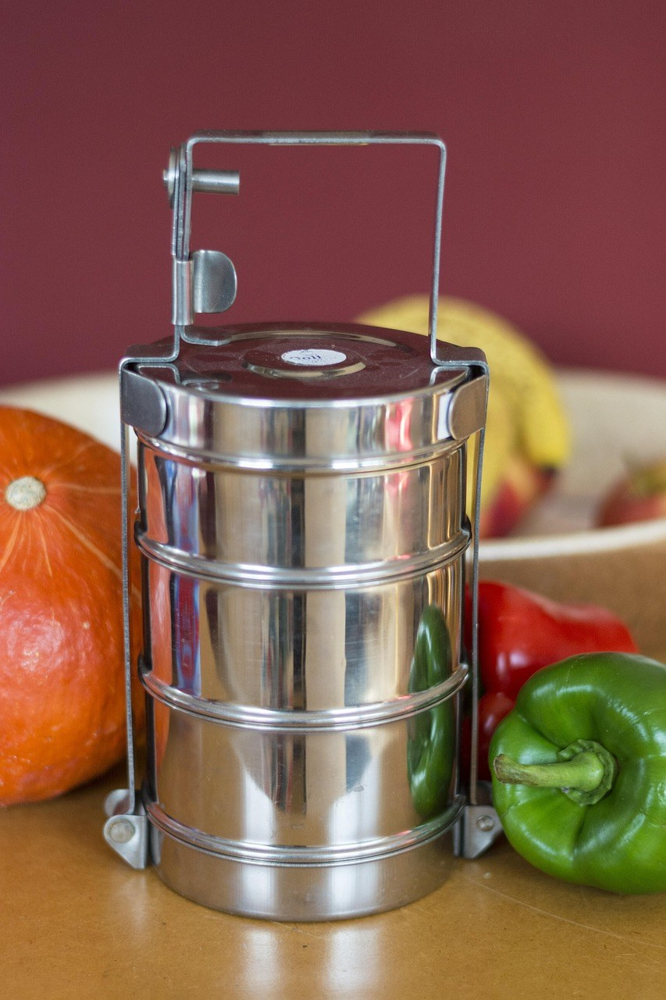
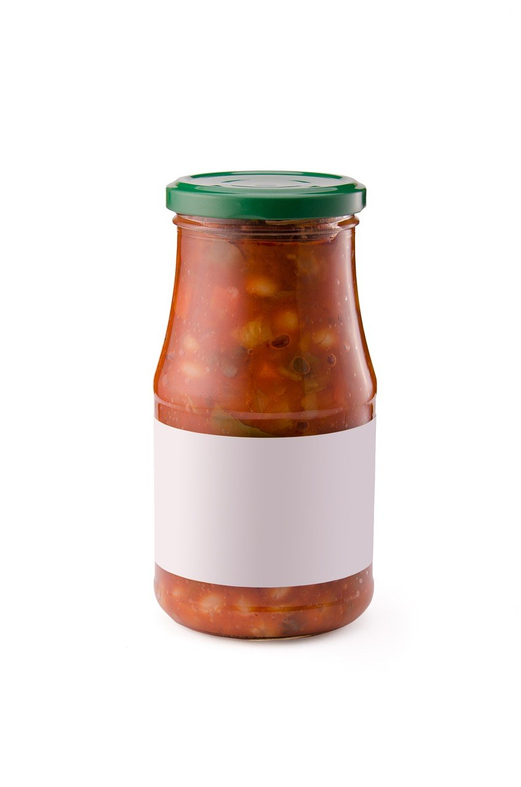

[사진 1: 썸네일]
냉장고 정리 사진을 보고 용기를 잔뜩 주문했는데, 막상 넣어 보니 선반에 안 들어가거나 문이 안 닫힌 적 있나요? 정리용기는 하나하나는 싸도 세트로 사면 금액이 꽤 되고, 크기가 안 맞으면 반품도 번거로워요.
그래서 오늘은 냉장고 정리용기 살 때 실수를 다섯 가지로 정리했어요. 실수마다 왜 문제가 되는지, 대신 무엇을 확인하면 되는지 함께 알려 드릴게요.
[사진 2]
📷 [직접 찍은 사진 넣기: 냉장고 선반 안쪽 깊이를 줄자로 재는 모습]
가장 흔한 실수예요. 냉장고는 모델마다 선반 깊이와 칸 높이가 달라서, 같은 용기라도 우리 집에서는 뒤쪽이 걸리거나 위 칸에 닿을 수 있어요.
주문 전에 선반 깊이, 칸 높이, 문 선반 폭 세 곳을 줄자로 재 두세요. 판매 페이지 치수는 재는 방법에 따라 조금씩 차이가 날 수 있으니 1~2cm 정도 여유를 두고 고르는 게 안전해요.
[사진 3]
📷 [직접 찍은 사진 넣기: 집에 있는 밀폐용기 바닥이나 뚜껑의 재질·온도 표시를 확대한 모습]
정리용기는 겉보기가 비슷해도 재질이 달라요. 용도에 맞지 않는 재질을 고르면 냄새가 배거나, 무거워서 손이 안 가거나, 데울 때 쓸 수 없어 다시 사게 돼요.
제품 표기에서 재질과 내열·내냉 온도를 꼭 확인하세요. 투명 플라스틱 중 트라이탄은 상세페이지에 '코폴리에스터'로 적혀 있기도 해요.
| 구분 | PP(폴리프로필렌) | 트라이탄(코폴리에스터) | 유리 |
|---|---|---|---|
| 투명도 | 반투명이 많음 | 투명해서 안이 잘 보임 | 투명 |
| 무게 | 가벼움 | 가벼움 | 무거움 |
| 깨짐 | 잘 안 깨짐 | 잘 안 깨짐 | 떨어뜨리면 깨질 수 있음 |
| 냄새·색 배임 | 기름진 음식은 배기 쉬움 | 제품 표기 확인 | 잘 안 뱀 |
| 잘 맞는 곳 | 채소·소분 재료 | 자주 꺼내 보는 반찬·간식 | 김치·카레 등 냄새 강한 음식 |
[사진 4]
둥근 용기는 모서리마다 빈틈이 생겨 같은 칸에 넣을 수 있는 양이 줄어요. 모양과 크기가 제각각이면 겹쳐 쌓기도 어려워 결국 앞줄만 쓰게 돼요.
냉장고 정리용기는 사각형 위주로, 가능하면 같은 시리즈에서 크기만 다르게 고르세요. 뚜껑 규격이 같으면 쌓기 쉽고, 뚜껑을 잃어버려도 서로 바꿔 쓸 수 있어요.
[사진 5]
안이 안 보이는 용기에 담으면 무엇이 있는지 잊기 쉬워요. 같은 재료를 또 사거나, 안쪽에서 유통기한을 넘긴 음식을 뒤늦게 발견하게 되죠.
자주 꺼내는 반찬과 간식은 투명 용기에 담고, 뚜껑이나 옆면에 내용물과 담은 날짜를 적은 이름표를 붙여 두세요. 마스킹테이프와 네임펜만 있어도 충분해요.
정리용기가 생기면 칸을 가득 채우고 싶어지는데, 냉장고는 찬 공기가 돌아야 고르게 차가워져요. 용기가 냉기 나오는 곳을 막거나 칸을 빽빽하게 채우면 일부 칸만 덜 차가울 수 있어요.
칸마다 손이 들어갈 정도의 여유를 남기고, 한 번에 세트로 사기보다 가장 자주 쓰는 칸부터 두세 개 넣어 본 뒤 늘리는 방법을 권해요.
Q. 정리용기는 몇 개부터 사면 될까요?
A. 가장 어수선한 칸 하나를 기준으로 두세 개만 먼저 사 보세요. 넣어 보고 크기가 맞으면 같은 시리즈로 늘리면 실패가 적어요.
Q. PP 용기는 오래 써도 괜찮나요?
A. 흠집이 많아지거나 색과 냄새가 배어 안 빠지면 바꿔 주는 게 좋아요. 용기끼리 겹쳐 쌓으면 흠집이 생기기 쉬우니 씻은 뒤엔 뚜껑을 따로 보관하세요.
정리하면, 냉장고 정리용기 살 때 실수는 치수·재질·모양·이름표·여유 공간 다섯 가지만 챙기면 대부분 피할 수 있어요. 자주 꺼내는 반찬은 투명 사각 용기, 냄새 강한 음식은 유리 용기로 나눠 고르면 무난해요.
여러분 냉장고에서 가장 정리가 안 되는 칸은 어디인가요? 댓글로 알려 주시면 그 칸에 맞는 정리법도 다뤄 볼게요.
인스타그램 @todayzip.info 에서 살림 꿀팁을 30초 영상으로도 볼 수 있어요.